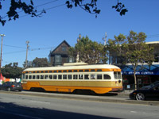

Your Tour Guide
Cable Cars
The San Francisco cable car system is the world's last permanently operational manually operated cable car system, in the US sense of a tramway whose cars are pulled along by cables embedded in the street. It is an icon of San Francisco, California. The cable car system forms part of the intermodal urban transport network operated by the San Francisco Municipal Railway, or "Muni" as it is better known. Cable cars operate on two routes from downtown near Union Square to Fisherman's Wharf, and a third route along California Street.
While the cable cars are used to a certain extent by commuters, their small service area and premium fares for single rides make them more of a tourist attraction. They are among the most significant tourist sites in the city, along with Alcatraz Island and Fisherman's Wharf.
It is the only transportation system listed on the National Register of Historic Places.
 The cable cars are not to be confused with San Francisco's historic streetcars, which operate on Market Street and on the Embarcadero.
Check out our cable turnaround video